Platforme de gestion de change
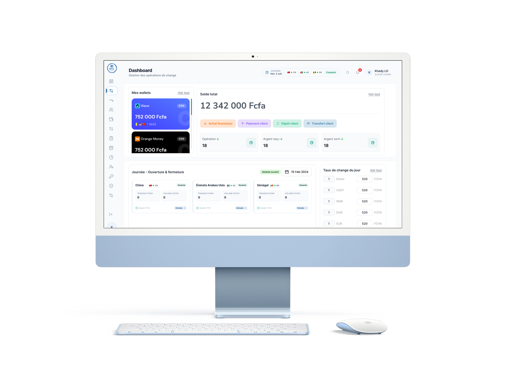
01 - Contexte
BTC Change est une plateforme métier dédiée à la gestion des opérations de change et des flux financiers. La plateforme centralise plusieurs workflows opérationnels : gestion des wallets, transactions de change, ouverture et fermeture des journées, achats fournisseurs, conversions de devises, gestion des tiers, paiement des dettes et suivi des tâches. L’objectif du projet était d’améliorer l’expérience des opérateurs en rendant la plateforme plus claire, cohérente, efficace et sécurisée.
02 - Le challenge
Le défi était de simplifier l’expérience des agents tout en conservant la profondeur des opérations financières. Je devais notamment :
- Clarifier les informations essentielles pour faciliter les décisions quotidiennes.
- Simplifier les workflows sans supprimer les étapes métier nécessaires.
- Structurer les interactions pour rendre les opérations financières plus prévisibles.
- Créer une expérience cohérente à travers les différents modules de la plateforme.
- Poser des bases réutilisables pour faciliter l’évolution future du produit.
03 - Design Process
J'ai abordé le projet en 3 étapes :
Audit UX
J'ai réalisé un audit UX de la plateforme afin d'identifier les principaux points de friction à travers les workflows opérationnels. L'analyse s'est basée sur les 10 principes heuristiques de Nielsen, complétée par un audit visuel.
| Problème | Ce que cela provoquait |
|---|---|
| Incohérence des composants | Un même pattern pouvait avoir plusieurs comportements visuels |
| CTA multi-couleurs | Hiérarchie des actions difficile à comprendre |
| Steppers inconsistants | 3 versions différentes d'un même composant |
| Densité informationnelle | Lecture difficile des listes et opérations |
| Manque de feedback & guardrails | États ambigus et risque d'erreur sur les actions sensibles |
From audit to action
J'ai donc orienté le redesign autour de 4 priorités :
Réduire la densité et améliorer la hiérarchie de l'information.
Créer des composants et patterns réutilisables.
Repenser les workflows et les interactions complexes.
Ajouter davantage de contexte, de validation et de garde-fous aux opérations sensibles.
03 - Design system
J’ai conçu un Design System BTC Change pour structurer les fondations visuelles et fonctionnelles du produit. Pour accélérer la conception et explorer les différentes variantes, j’ai utilisé Claude AI comme assistant de design.
3.1 Fondation
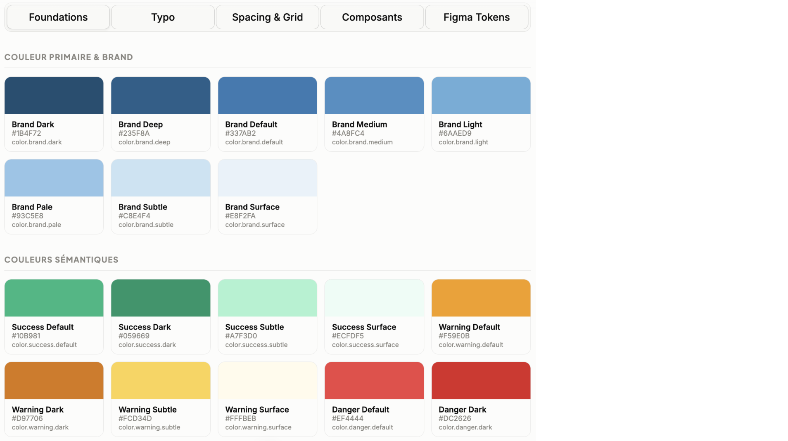
3.2 Typographie
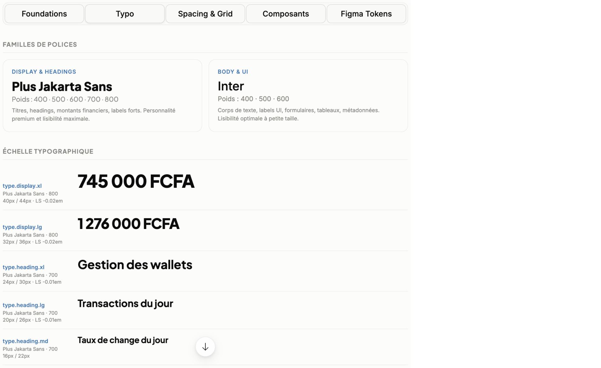
3.3 Spacing et Grid
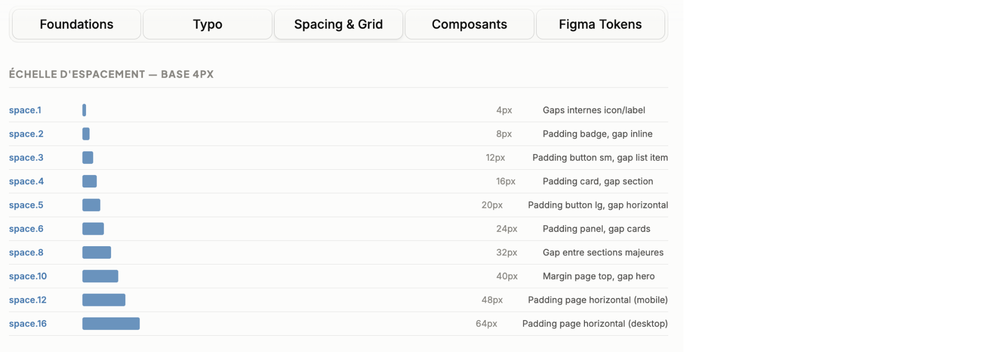
3.4 Composants
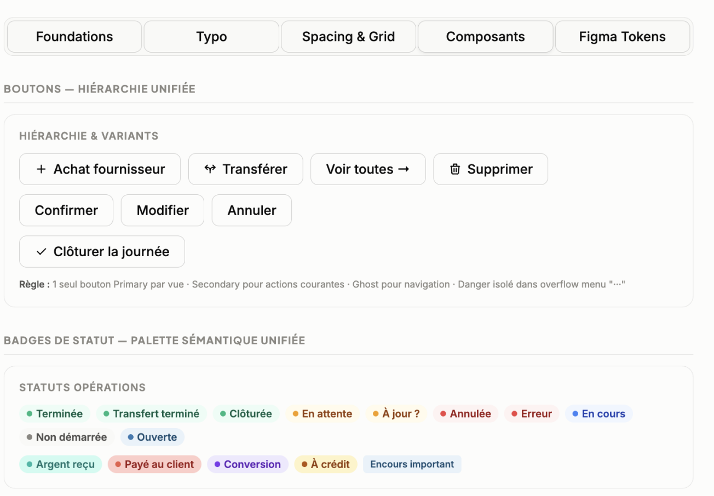
4 - Refonte UI des workflows
4.1 Le Dashboard
Le Dashboard souffrait principalement d'une mauvaise hiérarchie :
- actions rapides très visibles ;
- plusieurs couleurs concurrentes ;
- cartes de soldes avec gradients ;
- métriques à zéro sans contexte.
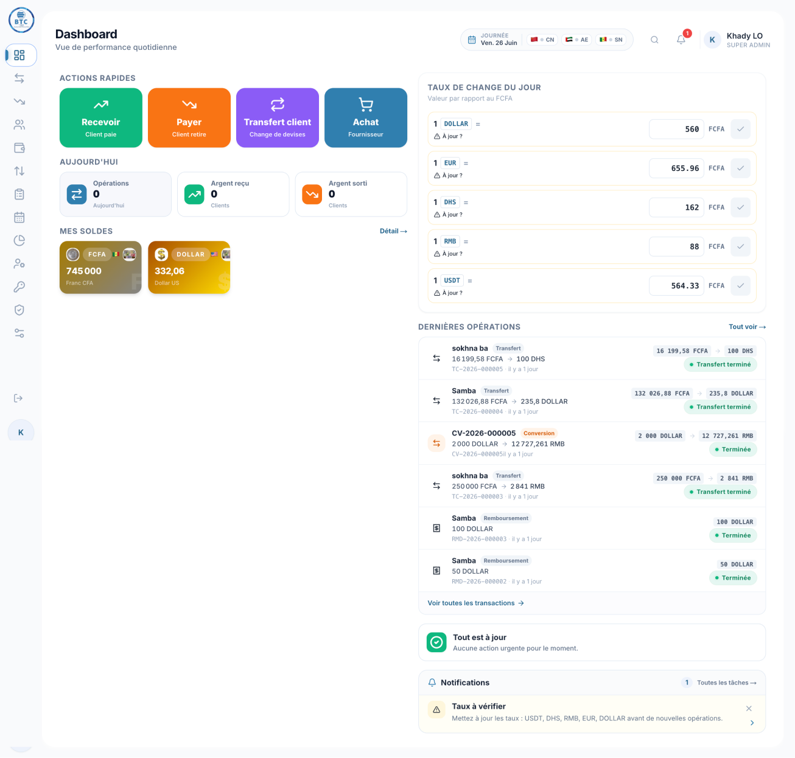
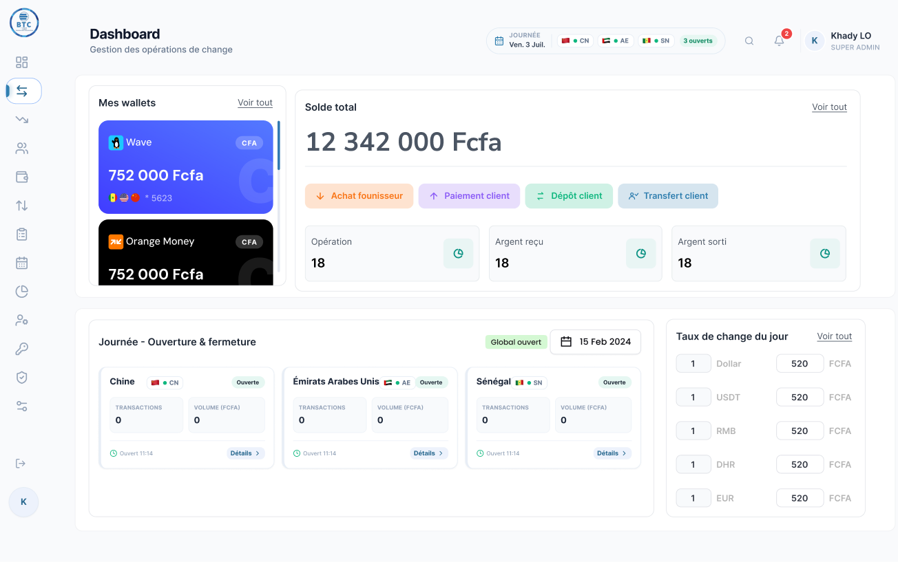
Le Dashboard a été restructuré autour de la situation opérationnelle de l’agent.
- Hiérarchisation de l’information : situation financière, activité et actions principales mieux structurées.
- Vue opérationnelle par pays : statut, transactions et volumes accessibles en un coup d’œil.
- Actions rapides rationalisées : les principales opérations sont directement accessibles depuis le solde.
4.2 Transactions
L'audit relevait :
- 7 filtres sur une seule ligne ;
- recherche ;
- trop d'informations par transaction ;
- plusieurs CTA de même importance ;
- types d'opérations mélangés ;
- identifiants trop longs ;
- panneau de détail compressant la liste.
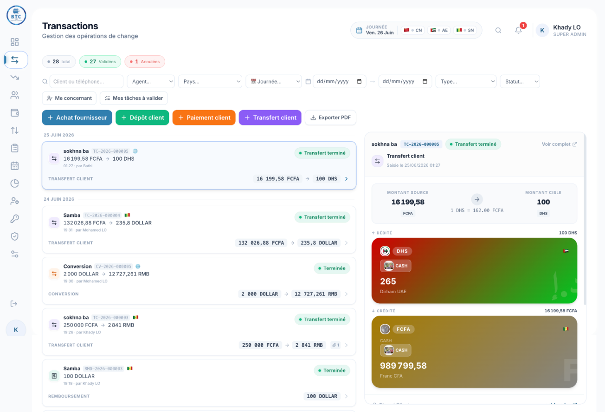
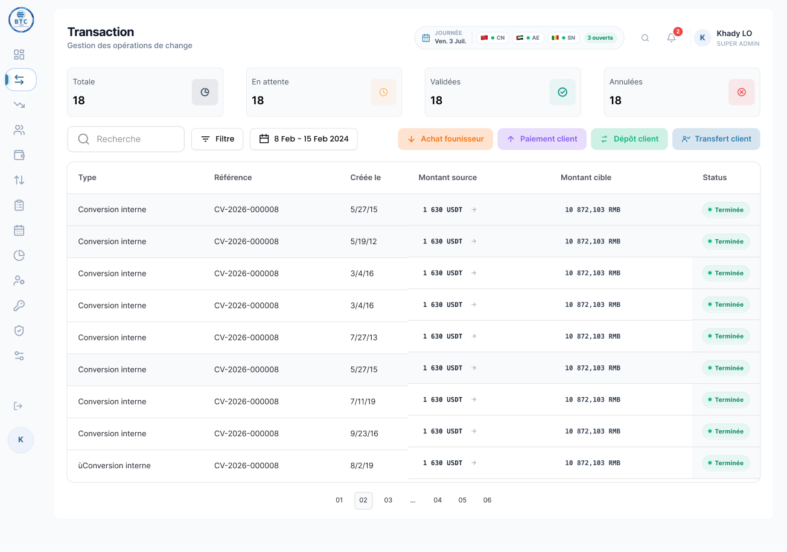
- Réduction de la densité : table recentrée sur les informations essentielles.
- Filtres restructurés : recherche, filtre et période mieux organisés.
- Statuts et compteurs clarifiés : Total, En attente, Validées, Annulées pour suivre rapidement l’activité.
4.3 Mes Wallets
La page Wallets présentait plusieurs problèmes structurels :
- Cartes wallet peu lisibles : contraste insuffisant.
- Actions sans hiérarchie claire : « Ajouter un wallet », « Transférer » et « Apport capital » avaient des traitements visuels différents sans logique commune.
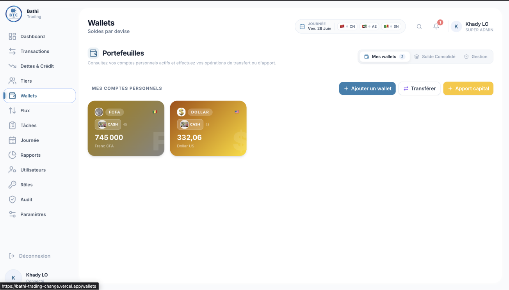
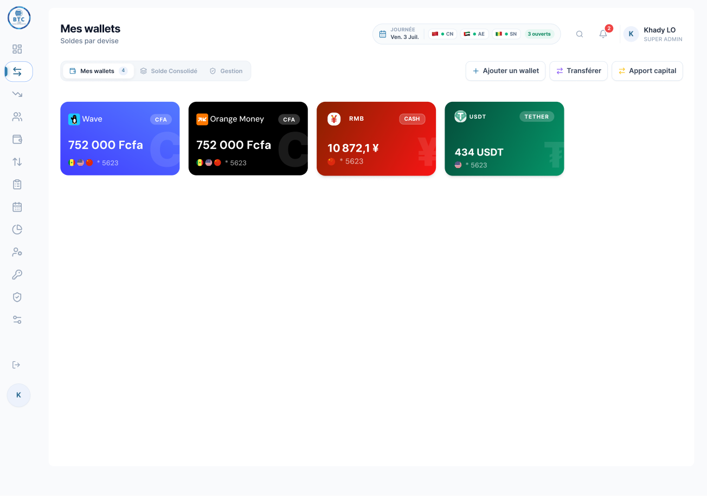
La nouvelle page restructure l’expérience autour de la gestion et de la lecture des wallets.
- Les cartes ont été redesignées avec une structure plus lisible.
- Les actions sont regroupées dans une zone dédiée en haut de page.